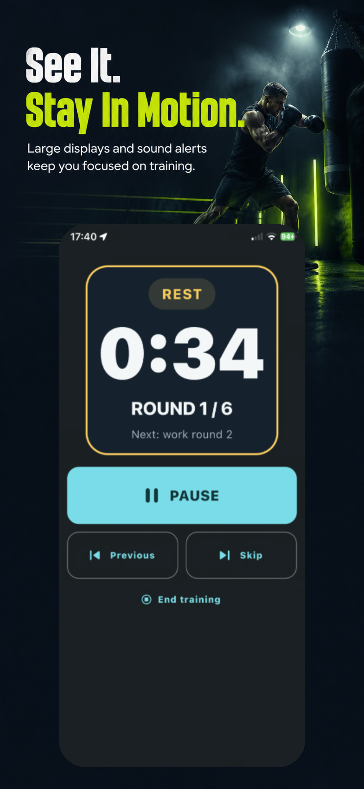
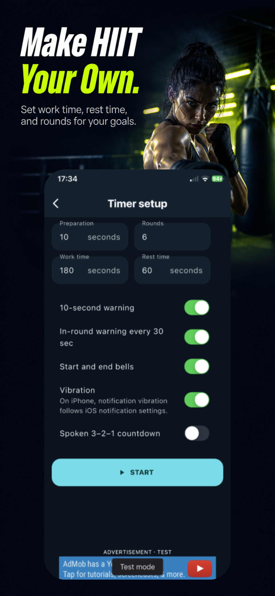

01
FREE TO DOWNLOAD
Turn focus
into rounds.
Bellstride is a round timer for
boxing, HIIT, and Tabata.


FOCUS
Focus on your round,
not the clock.
See time remaining, the current round, and the next rest period in one clear view. Keep your workout moving without breaking your rhythm.

FLEXIBILITY
Boxing rounds or
HIIT intervals.
- 01Work and rest time
- 02Number of rounds
- 03Bells and advance alerts
- 04Vibration
USE CASES
Keep training
at your pace.
Bellstride is designed for workouts that repeat rounds and rest.
- BoxingShadowboxing, heavy bag, and mitt drills
- HIITIntervals shaped around your goal
- TabataShort, high-intensity workouts
- Home workoutsYour own work, rest, and round settings
HOW IT WORKS
Ready in a few taps.
02
Set up
03
Start
FAQ
About Bellstride
What is Bellstride?
Bellstride is a round timer for boxing, HIIT, and other interval training.
Is Bellstride free?
Bellstride is free to download.
Can I use it for workouts other than boxing?
Yes. Use it for HIIT, Tabata, home workouts, and any training that repeats work and rest.
What can I set?
Set work time, rest time, and number of rounds, along with bells, advance alerts, and vibration.
Can I use it as a Tabata timer?
Yes. Choose a Tabata routine and adjust work time, rest time, and rounds for your goal.
START YOUR ROUND
Start your next
round now.
Free to download